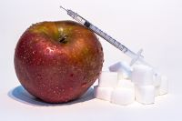

Malefícios
Diabetes tipo 2
O diabetes tipo 2 ocorre devido a uma dificuldade do organismo para aproveitar o açúcar da forma correta, que é utilizando-o como combustível para as células. Porém, o açúcar também favorece o surgimento da doença. Estudos mostram que pessoas que consomem mais doces têm uma probabilidade maior de desenvolver essa patologia. O consumo excessivo de açúcar aumenta os níveis de glicose no sangue e diminui gradativamente a produção do hormônio insulina no organismo, causando, assim, a resistência à insulina e a diabetes tipo 2.
Doença cardiovascular
O consumo de açúcar favorece a pressão alta, porque aumenta os níveis de ácido úrico no sangue, uma substância que inibe a ação do óxido nítrico no organismo. Como o óxido nítrico ajuda a relaxar os vasos sanguíneos equilibrando a pressão arterial, a inibição dessa substância no organismo pode causar pressão alta. Quando as células do fígado metabolizam até mesmo o açúcar das frutas, elas geram diversos subprodutos, sendo que um deles é o triglicerídeo. Uma parte dos triglicerídeos liberados nacorrente sanguínea se acumula nas paredes das artérias, bloqueando a passagem do sangue e favorecendo a ocorrência de infartos.
Cárie
O açúcar promove o crescimento e a multiplicação de bactérias na boca, que fermentam esse ingrediente alterando o pH dos dentes e causando cáries. O açúcar contribui para o desenvolvimento da cárie dentária, pois ele é convertido em ácido pelas bactérias presentes em nossa boca. Este ácido ataca e enfraquece os dentes. Portanto, quanto maior a ingestão de açúcar, maior a proliferação de bactérias, aumentando o risco de cáries. Os alimentos que mais prejudicam os dentes e que podem levar ao desenvvolvimento de cáries são os alimentos ricos em açúcar, como balas, bolos ou refrigerantes, por exemplo, principalmente quando consumidos diariamente.
Enfraquecimento do sitema imunológico
Esse é outro sistema muito afetado pelos malefícios do açúcar. Quando uma pessoa come doces, ela temporariamente inibe a capacidade das células de defesa para enfrentarem invasores. Esse é um efeito que dura algumas horas até que tudo volte ao normal. Portanto, quando uma pessoa come doces várias vezes ao dia, ela prejudica a ação do sistema imunológico continuamente. Dessa forma, a susceptibilidade a infecções externas por vírus e bactérias se torna maior, enquanto suas chances de detectar internamente células alteradas e eliminá-las é reduzida.
Obesidade
O açúcar é extremamente calórico. São 387 calorias para cada 100 gramas desse produto. Amplamente usado nas receitas culinárias e adicionados a bebidas como cafés, chás e sucos, ele contribui para o aumento de peso.
Basta fazer as contas: quem toma uma xícara de café por dia, com uma colher de sopa de açúcar, consumirá 36.500 só com esse hábito. Isso sem contar todas as outras receitas em que ele é utilizado, além da adição em produtos industrializados, mesmo salgados.
Porém, vale a pena destacar que o açúcar não é o único responsável pela obesidade. Esse problema é causado por uma série de hábitos, tanto no que diz respeito à alimentação, sono desregulado, falta de atividade física etc.
Resistência à insulina
A resistência à insulina é um dos principais sintomas do diabetes. Ela acontece quando a quantidade de insulina produzida pelo nosso pâncreas não está sendo bem absorvida pelo nosso organismo. Com o tempo, o corpo precisa produzir cada vez mais insulina para lidar com a alta carga de açúcar ingerido, fazendo com as nossas células criem resistência a esse hormônio.